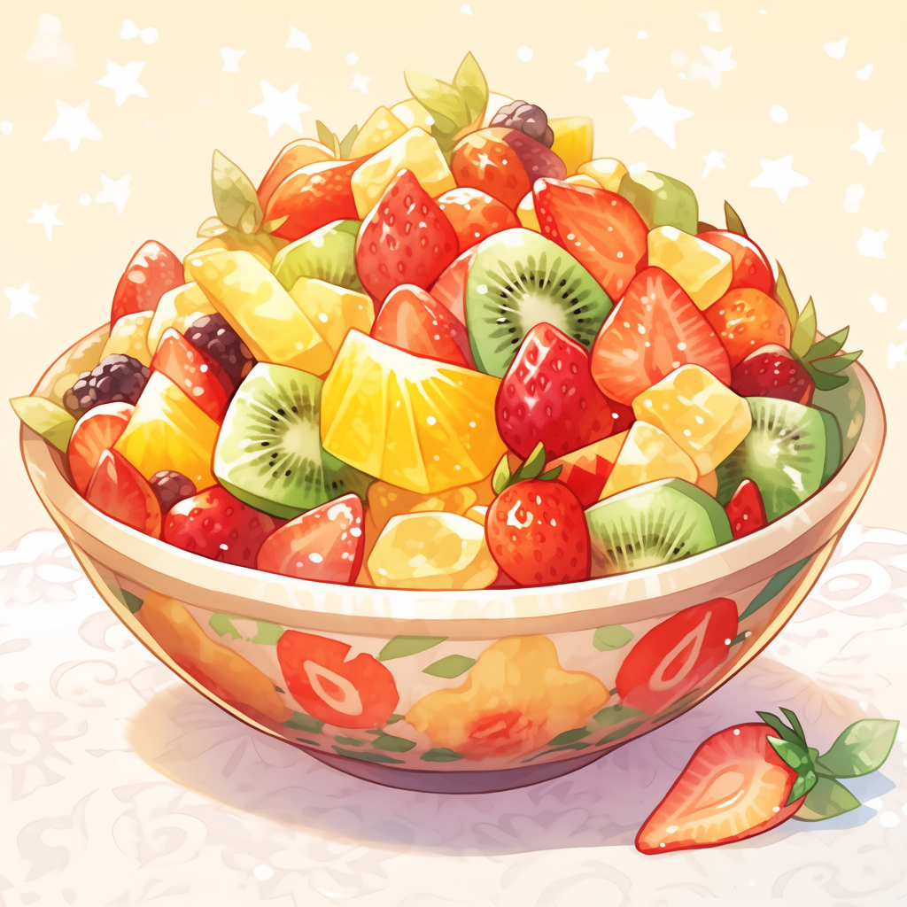
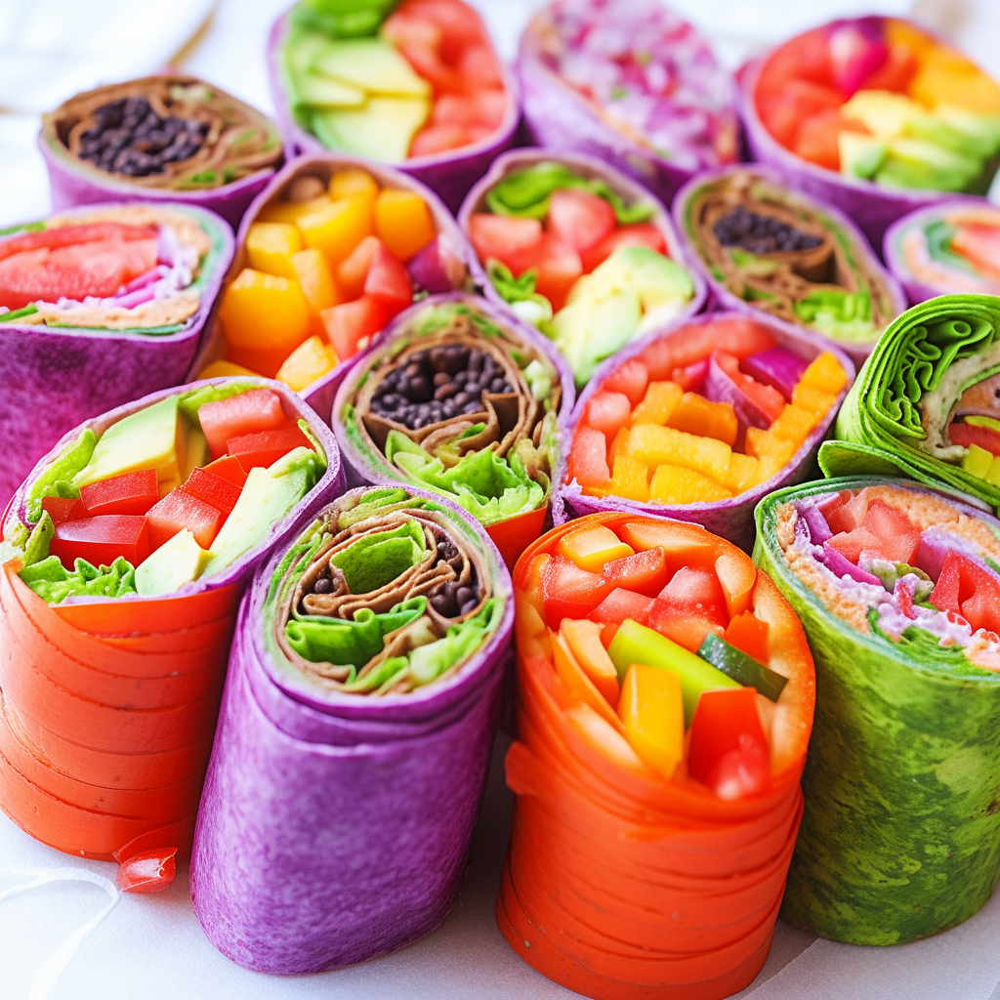
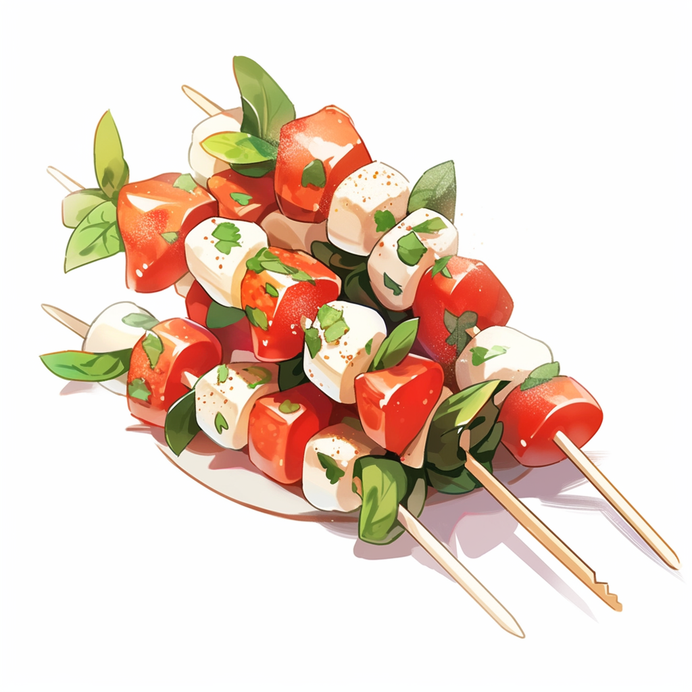

Cooking a fun recipe is a great way to relieve stress
Even if you're someone who doesn't usually cook cooking can be a great stress reliever. Trying a new recipe you seen online is a fun way to break out of your shell and experience something new
Here are 5 Simple and Fun Recipes to Try!!!
Fruit Salsa with Cinnamon Chips

Ingredients:
Approximately 1 cup each of diced strawberries, kiwis, pineapples, and mangos
Squeze of lime juice to taste.
A handful of fresh mint leaves, chopped.
4-6 tortillas for cinnmon chips.
Melted butter for brushing.
Cinnamon sugar for sprinkling
Instructions
Dice the strawberries, kiwis, pineapples, and mangoes and mix them together in a bowl.
Add a squeeze of lime juice and chopped fresh mint leaves to the fruit mixture.
Cut the tortillas into triangles, brush them with melted butter, and sprinkle cinnamon sugar on top.
Bake the cinnamon chips in the oven until crispy.
Serve the fruit salsa with the cinnamon chips.
Recipe 1
Rainbow Veggie Wraps

Ingredients:
Tortillas or lettuce leaves, depending on the desired number of wraps
Approximately 1/2 cup of hummus or cream cheese
Colorful vegetables such as shredded carrots, bell peppers, cucumbers, avocados, and spinach leaves, as per personal prefenece
Instructions:
Lay out tortillas or lettuce leaves on a clean surface.
Spread a layer of hummus or cream cheese on each tortilla or lettuce leaf.
Place shredded carrots, bell peppers, cucumbers, avocados, and spinach leaves on top of the spread.
Roll up the tortillas or wrap the lettuce leaves, securing them with toothpicks if necessary.
Slice the wraps into smaller portions, if desired.
Serve and enjoy!
Caprese Skewers

Ingredients
Cherry tomatoes, approximately 12-15
Mozzarella balls (bocconcini), approximately 12-15
Fresh basil leaves, approximately 12-15
Drizzle of balsamic glaze to taste
Salt and pepper for seasoning
Instructions:
Thread cherry tomatoes, mozzarela balls, and fresh basil leaves onto skewers in an alternating pattern
Drizzle balsamic glaze over the skewers
Season with salt and pepper to taste
Arrange the skewers on a serving platter or plate
Serve as an appetizer or side dish
Citrus Infused Water
Ingredients:
Water
Oranges
Lemons
Limes
Ice cubes
Instructions:
Fill a pitcher with water
Slice oranges, lemons, and limes into rounds or wedges
Add the citrus slices to the pitcher of water
Optionally, add ice cubes for extra chill
Stir gently to release the flavors
Let the water infuse in the refrigerator for at least 1 hour before serving
Pour into glases and enjoy refreshing citrus-infused water
Vegan Chocolate Chip Cookies
Ingredients:
2 cups of all-pupose flour
1 1/2 teaspoons of baking powder
1/2 teaspoon baking soda
1 teaspoon sea salt
1 cup packed brown sugar
1/2 cup melted coconut oil
1/3 cup thaini
6 tablespoons of water
2 teaspoons of vanilla extract
1 heaping cup of dark chocolate chips
Instructions:
Preheat the oven to 350°F and line 2 baking sheets with parchment paper
In a medium bowl, whisk together the flour, baking powder, baking soda, and salt until combined
In a large bowl, whisk together the brown sugar, coconut oil, tahini, water, and vanilla until smooth
Pour the dry ingredients into the bowl of wet ingredients and use a spatula to combine. Fold in the chocolate chips. Use a 2-tablespoon cookie scoop to scoop the dough onto the baking sheets. Bake, one sheet at a time, for 12 to 14 minutes. Remove from the oven and let cool on the baking sheet for at least 10 minutes